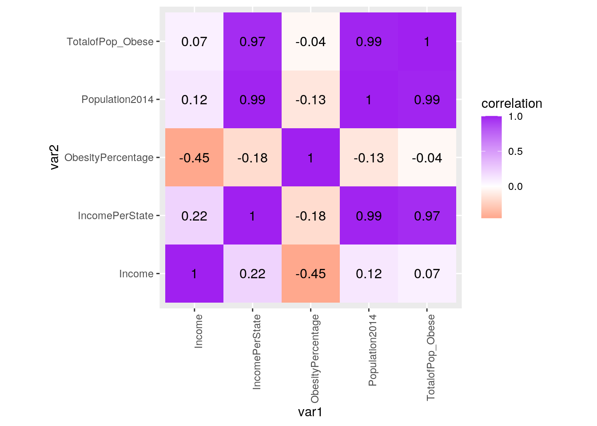
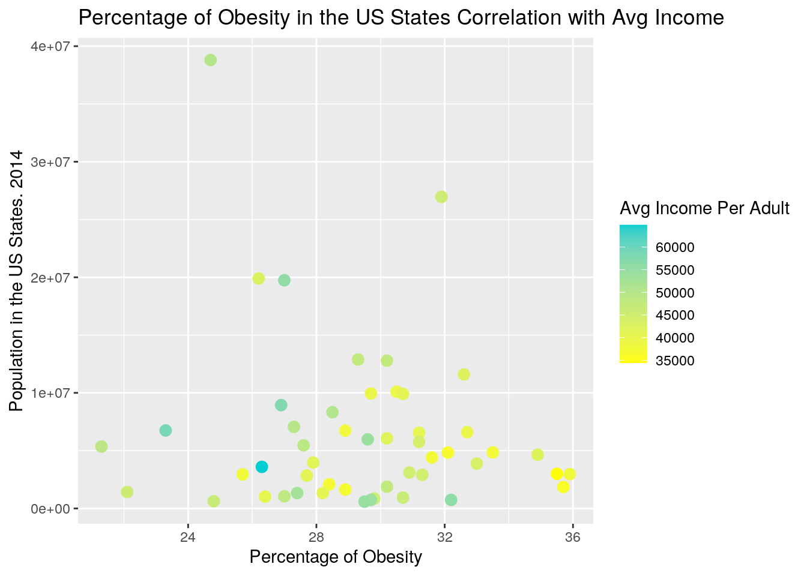
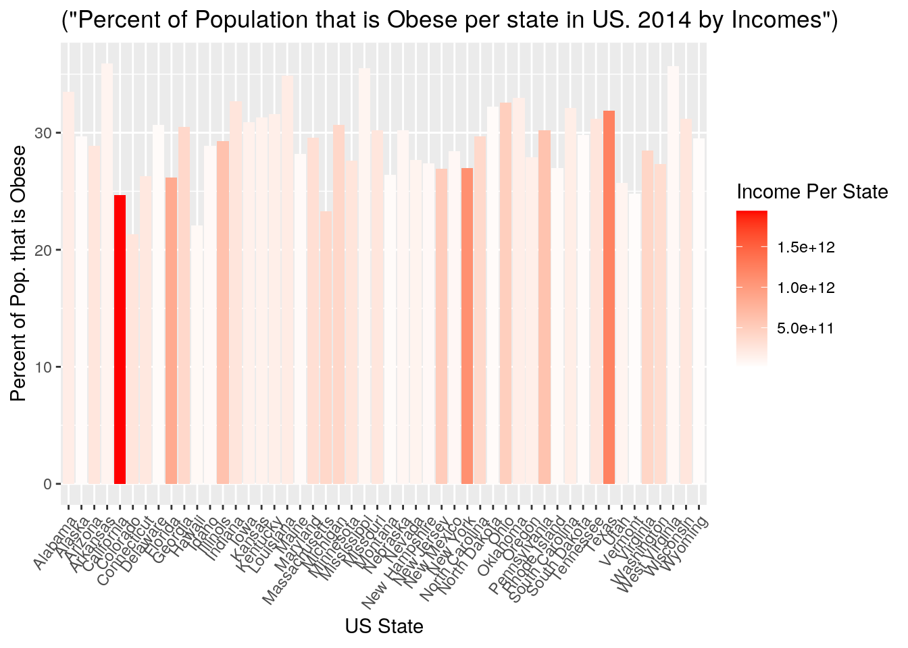
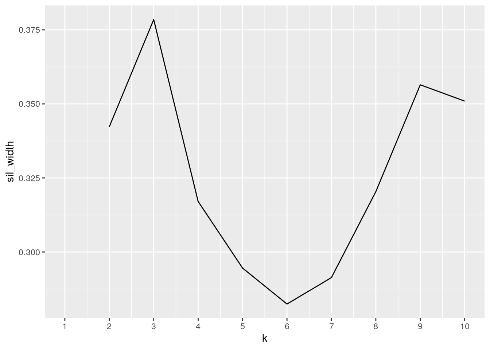
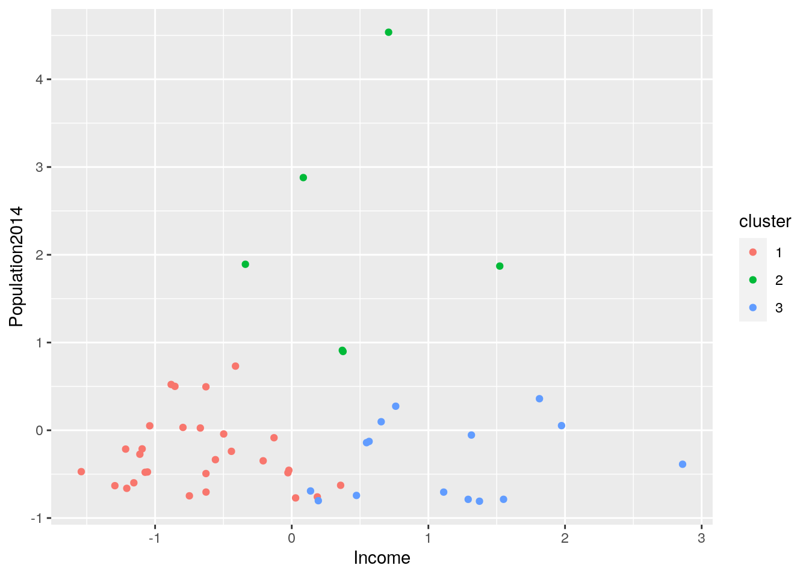
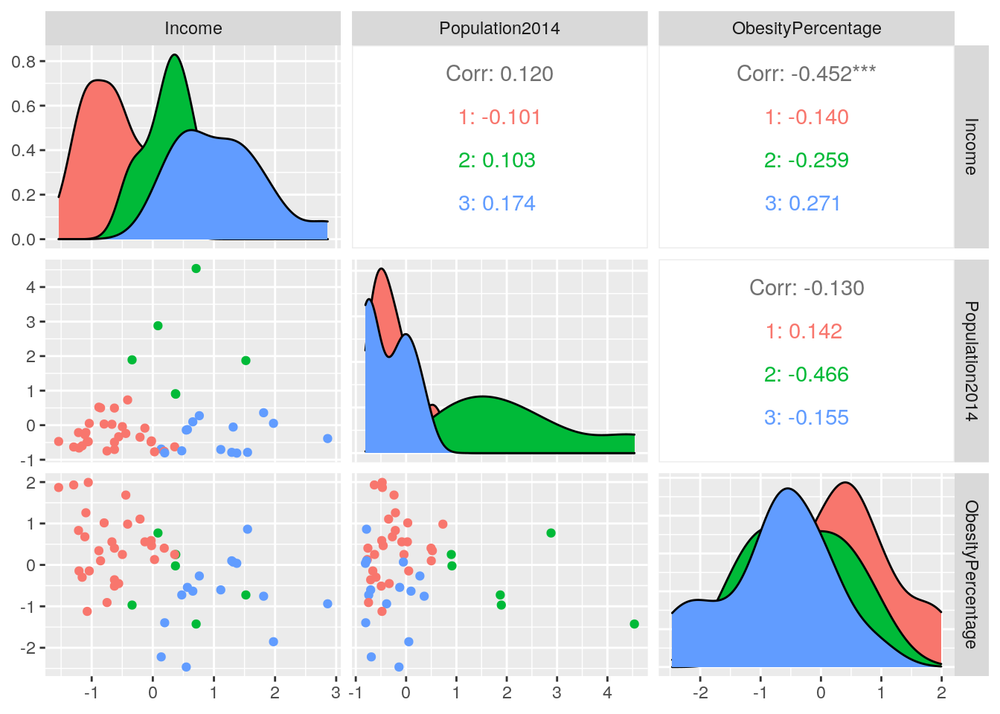

January 1, 0001
R Markdown
This is an R Markdown document. Markdown is a simple formatting syntax for authoring HTML, PDF, and MS Word documents. For more details on using R Markdown see http://rmarkdown.rstudio.com.
When you click the Knit button a document will be generated that includes both content as well as the output of any embedded R code chunks within the document. You can embed an R code chunk like this:
library(ggplot2)
library(tidyverse)## ── Attaching packages ─────────────────────────────────────── tidyverse 1.3.0 ──## ✓ tibble 3.1.1 ✓ dplyr 1.0.5
## ✓ tidyr 1.1.2 ✓ stringr 1.4.0
## ✓ readr 1.4.0 ✓ forcats 0.5.1
## ✓ purrr 0.3.4## ── Conflicts ────────────────────────────────────────── tidyverse_conflicts() ──
## x dplyr::filter() masks stats::filter()
## x dplyr::lag() masks stats::lag()library(readr)
library(readxl)
PopulationUS <- read_xlsx("USPopulation.xlsx")
library(readxl)
Income <- read_xlsx("Income.excel.xlsx")
library(readxl)
AdultObesity <- read_xlsx("adult_obese.xlsx")## New names:
## * `` -> ...3
## * `` -> ...4#Introduction: For Project 1, I have chosen to work with three datasets. I chose three datasets in order to fulfill the three variable requirement. The first dataset I chose, focuses on adult obesity in the United States from 2014. This dataset shows the percentage of the population that was considered obese, which is the first variable of this project. I found this dataset and downloaded it from the National Conference of State Legislatures. The second dataset shows the income of the population for each state in the United States, from 2014. The third dataset, focuses on the population of each state from 2014, therefore population would be the variable that will be used. I downloaded these three datasets to Excel on my computer and was then able to import them into R-studio and begin Project 1. I decided to focus on obesity and income in order to determine if there’s a correlation between the two.My decision was influenced because I'm interested in both downstream and upstream factors, of this health issue, faced by so many individuals across the US.To start on Project 1, I downloaded all these documents to R-Studio and tidy-ed them.The purpose of this function is to organize the data so that it is easier to work with.#
library(tidyr)
library(dplyr)
Obesity2 <- inner_join(PopulationUS, AdultObesity, by = "State")
print(Obesity2)## # A tibble: 50 x 5
## State Population Value ...3 ...4
## <chr> <dbl> <dbl> <chr> <dbl>
## 1 California 38802500 24.7 (23.5-25.9) 8025
## 2 Texas 26956958 31.9 (30.6-33.3) 14058
## 3 Florida 19893297 26.2 (25.0-27.5) 9156
## 4 New York 19746227 27 (25.6-28.5) 6325
## 5 Illinois 12880580 29.3 (27.6-31.1) 4835
## 6 Pennsylvania 12787209 30.2 (28.9-31.4) 10374
## 7 Ohio 11594163 32.6 (31.2-34.1) 10313
## 8 Georgia 10097343 30.5 (28.9-32.1) 5844
## 9 North Carolina 9943964 29.7 (28.4-31.0) 6621
## 10 Michigan 9909877 30.7 (29.4-32.0) 8024
## # … with 40 more rowsDataProject <- inner_join(Obesity2, Income, by = "State")
DataProject <- rename(DataProject, Population2014=Population)
SortDataProj <- DataProject %>% select(State, Population2014, Value, Income)
SortDataProj %>% arrange(State) %>% print(n=50)## # A tibble: 50 x 4
## State Population2014 Value Income
## <chr> <dbl> <dbl> <dbl>
## 1 Alabama 4849377 33.5 37512
## 2 Alaska 736732 29.7 54012
## 3 Arizona 6731484 28.9 37895
## 4 Arkansas 2966369 35.9 37782
## 5 California 38802500 24.7 49985
## 6 Colorado 5355866 21.3 48869
## 7 Connecticut 3596677 26.3 64864
## 8 Delaware 935614 30.7 46378
## 9 Florida 19893297 26.2 42737
## 10 Georgia 10097343 30.5 38980
## 11 Hawaii 1419561 22.1 46034
## 12 Idaho 1634464 28.9 36734
## 13 Illinois 12880580 29.3 47643
## 14 Indiana 6596855 32.7 39578
## 15 Iowa 3107126 30.9 44937
## 16 Kansas 2904021 31.3 44891
## 17 Kentucky 4413457 31.6 37396
## 18 Louisiana 4649676 34.9 42030
## 19 Maine 1330089 28.2 40745
## 20 Maryland 5976407 29.6 54176
## 21 Massachusetts 6745408 23.3 58737
## 22 Michigan 9909877 30.7 40740
## 23 Minnesota 5457173 27.6 48998
## 24 Mississippi 2994179 35.5 34431
## 25 Missouri 6063589 30.2 41639
## 26 Montana 1023579 26.4 39903
## 27 Nebraska 1881503 30.2 47557
## 28 Nevada 2839099 27.7 40742
## 29 New Hampshire 1326813 27.4 52773
## 30 New Jersey 8938175 26.9 57620
## 31 New Mexico 2085572 28.4 37091
## 32 New York 19746227 27 55611
## 33 North Carolina 9943964 29.7 39171
## 34 North Dakota 739482 32.2 55802
## 35 Ohio 11594163 32.6 42236
## 36 Oklahoma 3878051 33 43637
## 37 Oregon 3970239 27.9 41220
## 38 Pennsylvania 12787209 30.2 47679
## 39 Rhode Island 1055173 27 48359
## 40 South Carolina 4832482 32.1 36677
## 41 South Dakota 853175 29.8 45279
## 42 Tennessee 6549352 31.2 40457
## 43 Texas 26956958 31.9 45669
## 44 Utah 2942902 25.7 37664
## 45 Vermont 626630 24.8 46428
## 46 Virginia 8326289 28.5 50345
## 47 Washington 7061530 27.3 49610
## 48 West Virginia 1850326 35.7 36132
## 49 Wisconsin 5757564 31.2 44186
## 50 Wyoming 584153 29.5 54584#To join my datasets, I used the function inner_join. I combined these datasets by State, this way each state would have a column that shows the total population of the state from 2014, the percentage of the population that is obese, and the average income per citizen. Here, I also renamed Population to Population 2014. Next, I chose to use the select function to make one final dataset. This allowed me to exclude unwanted variables from the Obesity dataset. The variables that were dropped were variables that were not needed and were just metadata aboout obesity estimates. The variables that were dropped were "95% Cl" and "sample size" values. The new dataset consists of States in alphabetical order, Population2014, ObesePercentage, and Income2014.
DataProj2 <- rename(DataProject, ObesityPercentage= Value)%>% select(State, Population2014, ObesityPercentage, Income)%>% mutate(IncomePerState = Population2014 * Income) %>% mutate(TotalofPop_Obese=Population2014 * (ObesityPercentage/100))
DataProj2 %>% arrange(desc(ObesityPercentage))## # A tibble: 50 x 6
## State Population2014 ObesityPercenta… Income IncomePerState TotalofPop_Obese
## <chr> <dbl> <dbl> <dbl> <dbl> <dbl>
## 1 Arkan… 2966369 35.9 37782 112075353558 1064926.
## 2 West … 1850326 35.7 36132 66855979032 660566.
## 3 Missi… 2994179 35.5 34431 103092577149 1062934.
## 4 Louis… 4649676 34.9 42030 195425882280 1622737.
## 5 Alaba… 4849377 33.5 37512 181909830024 1624541.
## 6 Oklah… 3878051 33 43637 169226511487 1279757.
## 7 India… 6596855 32.7 39578 261090327190 2157172.
## 8 Ohio 11594163 32.6 42236 489691068468 3779697.
## 9 North… 739482 32.2 55802 41264574564 238113.
## 10 South… 4832482 32.1 36677 177240942314 1551227.
## # … with 40 more rowsDataFiltered1<- DataProj2 %>% filter(ObesityPercentage >= 25.0) %>% summarize(mean(Income, na.rm = T))
DataFiltered2<- DataProj2 %>% filter(ObesityPercentage <= 25.0) %>% summarize(mean(Income, na.rm = T))
Sumfunction1<- DataProj2 %>% group_by(ObesityPercentage >=25.0) %>% summarize(mean(Income, na.rm = T))
DataProj2 %>% summarize(max(ObesityPercentage, na.rm = T)) ## # A tibble: 1 x 1
## `max(ObesityPercentage, na.rm = T)`
## <dbl>
## 1 35.9#In the first step, I renamed Value to Obesity Percentage. Here I also created a different column named "totalofPop_obese", which is the Population * ObesityPercentage/100, in order to get this value. Next, I arranged Obesity Percentages by descending order in order to oberve and analyze the data better.
#Next, I used the filter function to make two groups, one with a obesity percentage of greater than 25% and the second group with a obesity percentage less than 25%. The results show that the group with a obesity percentage greater that 25% to have an average income of $44535.6 and the group with an obesity percentage of less than 25% to have an average income of $50010.6, which was interesting to see.
# I then used the "summarize" function to determine what state had the largest obesity percentage. The data shows the highest percentage to be 35.9%, which was Arkansas, with a total of 1,064,927 indiuals that were obese in 2014.
LargeStatesPop <- DataProj2 %>% group_by(Population2014 >= 4649676) %>% summarize(mean(ObesityPercentage, na.rm= T))
LargeStatesPop1 <- DataProj2 %>% group_by(Population2014 >= 4649676) %>% summarize(mean(Income))
sdLargeStates <- DataProj2 %>% group_by(Population2014 >= 4649676)%>% summarize(sd(Income))
SumFinalLargeStates <- inner_join(LargeStatesPop1, LargeStatesPop, by= "Population2014 >= 4649676")
FinLS <- inner_join(SumFinalLargeStates, sdLargeStates, by = "Population2014 >= 4649676")
#For the next step, I divided the 50 states into two groups. The first group contained the first 25 states with the greatest populations and the second group contained the other 25 states with the smaller total population. I then ran summary statistics and named the final dataset "FinLS". The dataset shows that Group 1, the first 25 largest states had an average income of $45,551.20. These states also had an average/mean of 29.28% of their population to be obese. The standard deviation of income was $6,471.63. However, Group 2, the smaller 25 states, had an average of $44,615.0. These states also had an average/mean of 29.472% of their population to be obese. The standard deviation of the population’s income is $7,436.648. By simply observing these results, I am able to observe a small correlation between income and obesity. Group 1, the first 25 states had a higher income compared to the second group, but had a lower percentage of obese people. In addition, their standard deviation for income was also lower.
DataProj2%>% select_if(is.numeric) %>% cor(use="pair")## Population2014 ObesityPercentage Income IncomePerState
## Population2014 1.0000000 -0.13035732 0.12041947 0.9912472
## ObesityPercentage -0.1303573 1.00000000 -0.45183538 -0.1847510
## Income 0.1204195 -0.45183538 1.00000000 0.2174483
## IncomePerState 0.9912472 -0.18475102 0.21744834 1.0000000
## TotalofPop_Obese 0.9893627 -0.03825165 0.07392432 0.9707516
## TotalofPop_Obese
## Population2014 0.98936274
## ObesityPercentage -0.03825165
## Income 0.07392432
## IncomePerState 0.97075163
## TotalofPop_Obese 1.00000000cormat1 <- DataProj2 %>% select_if(is.numeric) %>% cor(use = "pair")
tidycor <- cormat1 %>% as.data.frame %>% rownames_to_column("var1") %>% pivot_longer(-1, names_to = "var2", values_to = "correlation")
tidycor %>% ggplot(aes(var1, var2, fill=correlation)) + geom_tile() + scale_fill_gradient2(low = "red", mid="white", high = "purple") + geom_text(aes(label = round(correlation,2)), color = "black", size = 4) + theme(axis.text.x = element_text(angle = 90, hjust=1)) + coord_fixed()
ggplot(DataProj2, aes(x=ObesityPercentage, y=Population2014)) + geom_point(size = 3, aes(color = Income)) + labs(x = "Percentage of Obesity", y = "Population in the US States. 2014", title = "Percentage of Obesity in the US States Correlation with Avg Income") + labs(color = "Avg Income Per Adult") + scale_color_gradient(low="yellow", high = "Darkturquoise")
#The scatterplot aboves shows the population of the US States in the X-axis, the percentage of obesity within the population in the y-axis, and the third variable is the average income per adult in each state. There is no strict correlation, however the scatterplot shows there to be more blues and green, symbolizing a higher income, under 32% and more yellows, symbolizing a lower income, above 32%, while both are still seen within the entire graph.
library(ggplot2)
ggplot(DataProj2, aes(x= State)) +geom_bar(aes(y=ObesityPercentage, fill = IncomePerState, title=("Percent of Population that is Obese per state in US. 2014 by Incomes")), stat ="summary", fun=mean) + theme(axis.text.x = element_text(angle = 53, hjust = 1)) + xlab("US State") + ylab("Percent of Pop. that is Obese")+ labs(fill ="Income Per State") + scale_fill_gradient2(low ="white", high ="red")## Warning: Ignoring unknown aesthetics: title
#The bar graph above, titled "Percent of Population that is Obese Per State in the US. 2014, by Income", shows the US states in the x axis and the percentage of the population in the y axis. The third variable in this graph is the total income per state. As seen in the bar graph the darker reds, symbolizing higher income, have a lower percentage of obesity among their population. However, the lighter reds, symbolizing lower income, have higher values of obesity among their population.
library(cluster)
select(DataProj2, Income, Population2014,ObesityPercentage)## # A tibble: 50 x 3
## Income Population2014 ObesityPercentage
## <dbl> <dbl> <dbl>
## 1 49985 38802500 24.7
## 2 45669 26956958 31.9
## 3 42737 19893297 26.2
## 4 55611 19746227 27
## 5 47643 12880580 29.3
## 6 47679 12787209 30.2
## 7 42236 11594163 32.6
## 8 38980 10097343 30.5
## 9 39171 9943964 29.7
## 10 40740 9909877 30.7
## # … with 40 more rowsclust_data <- select(DataProj2, Income, Population2014,ObesityPercentage) %>% scale()
sil_width <- vector() #empty vector to hold mean sil width
for (i in 2:10) {
kms <- kmeans(clust_data, centers = i) #compute k-means solution
sil <- silhouette(kms$cluster, dist(clust_data)) #get sil widths
sil_width[i] <- mean(sil[, 3]) #take averages (higher is better)
}
ggplot() + geom_line(aes(x = 1:10, y = sil_width)) + scale_x_continuous(name = "k",
breaks = 1:10)## Warning: Removed 1 row(s) containing missing values (geom_path).
kmeansfinal <- clust_data%>% kmeans(3)
#To do this, I first selected the wanted variables, which were average Income, Population, and Obesity Percentage.Next, I used the function scale(), to pipe the data. I then used the silhouette width indexes, and ran clusters 2-10. The resutls was a graph that showed what clusters worked best. Next, 3 clusters were piped with kmeans(3) and finally a new column was made using the funciton mutate(), in order to add the cluster vector created in my orignal dataset.
kmeansclust <- clust_data %>% as.data.frame %>% mutate(cluster = as.factor(kmeansfinal$cluster))
view(kmeansclust)
kmeansclust %>% ggplot(aes(Income, Population2014,ObesityPercentage, color = cluster)) + geom_point()
library(GGally)## Registered S3 method overwritten by 'GGally':
## method from
## +.gg ggplot2ggpairs(kmeansclust, columns = 1:3, aes(color = cluster))
# Next, I plotted the selected data into a ggplot in order to be able to observe how the clusters were plotted. First, I, utilized the ggpairs() function in order to see all the possible combinations be graphed. As obsereved there are three x variables and three y variables that all come together and make nine figures.
# First, I'd like to focus on Income (x) and Obesity Percentage (y). This graph shows the green cluster to be the group of people with lower incomes and higher obesity percentage. The Red cluster, on the same graph, shows the group of people to have medium incomes and medium obesity percentages (when compared to the blue and green clusters). Next, the blue clusters are a bit more scattered however, it is easy to see that this group of people have higher incomes and lower obesity percentages. Next, I'd like to focus on the graph with Income (x) and Population Per State (y). The green cluster symbolize the states that have a lower population and a lower income. Next, the red cluster shows these states to have a higher population and a higher income. The blue cluster shows these states to have a lower population and a lower income. The final graph I'd like to focus on is Obesity Percentage (x) and Population (y). The blue and green clusters are pretty similar. These clusters have lower values of Population in their states however, the blue clust has a smaller value of obesity percentage while the green cluster has a higher value of obesity percentage. Te red cluster show states with a greater population and have a medium value of obesity percent.Including Plots
You can also embed plots, for example:

Note that the echo = FALSE parameter was added to the code chunk to prevent printing of the R code that generated the plot.